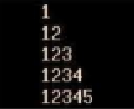

UT1.1. Bash — Ejercicios¶
Tarea
Resuelve los ejercicios que se plantean a continuación. Están agrupados por bloques temáticos.
Básicos¶
Ejercicio 1. Hola Mundo¶
Crea un shell script que muestre por pantalla el mensaje “¡Hola Mundo!”.
Ejercicio 2. Listado del directorio /etc¶
Realiza un script que guarde en un fichero el listado de archivos y directorios de la carpeta etc, a posteriori que imprima por pantalla dicho listado.
Ejercicio 3. Listado de /etc con recuento de líneas y palabras¶
Modifica el script anterior para que además muestre por pantalla el número de líneas del archivo y el número de palabras.
Ejercicio 4. Pedir y mostrar dos números¶
Diseña un script en Shell que pida al usuario dos números, los guarde en dos variables y los muestre por pantalla.
Solución
Ejercicio 5. Media aritmética de dos números¶
Crea un script donde se pida al usuario dos números y muestre la media aritmética.
Solución
Ejercicio 6. Añadir palabras a lista.txt¶
Crea un script donde se pida al usuario una palabra y se vaya añadiendo al mismo fichero de nombre lista.txt. Cada vez que se ejecute el script, se añadirá la nueva palabra al archivo lista.txt.
Solución
Ejercicio 7. Comprimir un directorio en tar.gz con fecha¶
Realiza un script que, dado un directorio pasado por parámetro, cree un archivo tar comprimido con gzip y con nombre igual a la fecha en formato yyyy-mm-dd seguido del directorio acabado en .tar.gz
Solución
Estructuras condicionales¶
Ejercicio 8. Mayor de dos números¶
Crea un script donde se pida al usuario dos números y diga cúal es mayor.
Solución
Ejercicio 9. Menú de operaciones matemáticas¶
Realiza un script que contenga un menú, de forma que muestre las cuatro operaciones matemáticas básicas: sumar, restar, multiplicar y dividir. Solicita dos números al usuario y muestra el resultado en función de la opción seleccionada.
Solución
#!/bin/bash
echo "Menú de operaciones"
echo "1) Sumar"
echo "2) Restar"
echo "3) Multiplicar"
echo "4) Dividir"
read -p "Elige una opción (1-4): " opcion
read -p "Introduce el primer número: " num1
read -p "Introduce el segundo número: " num2
case "$opcion" in
1) resultado=$(echo "scale=2; $num1 + $num2" | bc) ;;
2) resultado=$(echo "scale=2; $num1 - $num2" | bc) ;;
3) resultado=$(echo "scale=2; $num1 * $num2" | bc) ;;
4)
if [ "$num2" -eq 0 ]; then
echo "Error: no se puede dividir entre 0"
exit 1
fi
resultado=$(echo "scale=2; $num1 / $num2" | bc)
;;
*)
echo "Opción no válida"
exit 1
;;
esac
echo "Resultado: $resultado"
Ejercicio 10. parimpar.sh: par o impar¶
Crea un script parimpar.sh que solicite un número y diga si es par o impar.
Solución
Ejercicio 11. Copiar un fichero con validaciones¶
Realizar un shell script que copie el fichero indicado como primer parámetro posicional de manera que la copia tenga el nombre indicado en el segundo parámetro posicional. Hay que controlar:
- a) Que se indiquen dos parámetros.
- b) Que exista y sea archivo ordinario el primer parámetro.
- c) Que no exista un identificador (fichero ordinario, directorio, etc..) con el mismo nombre que el indicado en el segundo parámetro.
Si se produce alguna de las situaciones anteriores se visualizará un mensaje de error indicativo.
Solución
#!/bin/bash
# a) Se deben indicar dos parámetros
if [ $# -ne 2 ]; then
echo "Error: se deben indicar dos parámetros (origen y destino)"
exit 1
fi
origen=$1
destino=$2
# b) El primer parámetro debe existir y ser un archivo ordinario
if [ ! -f "$origen" ]; then
echo "Error: '$origen' no existe o no es un archivo ordinario"
exit 2
fi
# c) No debe existir ningún identificador con el nombre del segundo parámetro
if [ -e "$destino" ]; then
echo "Error: ya existe un fichero o directorio llamado '$destino'"
exit 3
fi
cp "$origen" "$destino"
echo "Copia realizada: '$origen' -> '$destino'"
Ejercicio 12. Buenos días / tardes / noches según la hora¶
Crea un shell script que al ejecutarlo muestre por pantalla uno de estos mensajes “Buenos días”, “Buenas tardes” o “Buenas noches”, en función de la hora que sea en el sistema (de 8:00 de la mañana a 15:00 será mañana, de 15:00 a 20:00 será tarde y el resto será noche). Para obtener la hora del sistema utiliza el comando date.
Solución
Ejercicio 13. AGENDA: mantenimiento de lista.txt¶
Construye un programa denominado AGENDA que permita mediante un menú, el mantenimiento de un pequeño archivo lista.txt con el nombre, dirección y teléfono de varias personas. Debes incluir estas opciones al programa:
- Añadir (añadir un registro)
- Buscar (buscar entradas por nombre, dirección o teléfono)
- Listar (visualizar todo el archivo).
- Ordenar (ordenar los registros alfabéticamente).
- Borrar (borrar el archivo).
Ejercicio 14. gestionusuarios.sh: alta y baja de usuarios¶
Realizar un script gestionusuarios.sh que permita dar de alta y de baja a usuario del sistema GNU/Linux indicados como argumento:
- En el caso de que se le pase la opción alta: el script asignará al usuario un identificativo para el sistema con el formato aluXXYYZ donde XX son las dos primeras letras del apellido1, YY son las dos primeras letras del apellido2 y Z es la inicial del nombre. En caso de no indicar el grupo al que pertenece, se creará un nuevo grupo con el mismo identificativo que el usuario.
- En el caso de que se le pase la opción baja: el programa debe calcular la identificación del usuario, igual que se indica en el menú anterior, y proceder a dar de baja la cuenta.
- En otro caso. Indicar “Error. La sintaxis correcta es ./gestionusuarios.sh alta/baja nombre apellido1 apellido2 [grupo]”
Bucles¶
Ejercicio 15. Tabla de multiplicar de n¶
Realiza un script que, dado un número n pasado por parámetro, muestre su tabla de multiplicar con el formato de salida siguiente: i x n = resultado.
Ejercicio 16. Suma del 1 al 1000 con for, while y until¶
Crea un shell script que sume los números del 1 al 1000 mediante una estructura
for, while y until.
Ejercicio 17. Suma acumulada hasta introducir 0¶
Haz un script que vaya dando la suma de todos los números que se introduzca por teclado hasta que se introduzca un 0, en cuyo caso se mostrará el último resultado y terminará el script.
Ejercicio 18. Patrón con for (I)¶
Realizar un script utilizando el bucle for que muestre el siguiente patrón:

Ejercicio 19. Patrón con for (II)¶
Realizar un script utilizando la estructura el bucle for que muestre el siguiente patrón:

Ejercicio 20. primo.sh: comprobar si un número es primo¶
Crea un script primo.sh que verifique si el número pasado por parámetro es primo o no.
Ejercicio 21. juego.sh: adivinar un número¶
Crea un script juego.sh que consista en un juego de adivinar un número del 1 al 100. El número a adivinar se pondrá fijo al principio del script. Se le irán preguntando números al usuario y se dirá si el número es mayor o menor que el que hay que adivinar. El juego termina si el usuario averigua el número (Mensaje de Enhorabuena) o introduce un 0 (Se rinde).
Ejercicio 22. Listar entradas de un directorio¶
Realizar un script que reciba como único parámetro el nombre de un directorio, especificado mediante su nombre de ruta completo. El programa debe mostrar un listado no recursivo de todas las entradas contenidas en ese directorio, indicando para cada una de ellas si se trata de un fichero o de un directorio. Al final, debe mostrarse un mensaje indicando el número total de entradas procesadas.
Ejercicio 23. Tipos de entrada en /dev¶
Modifica el script anterior para que indique si se trata de un fichero, de un directorio, de un enlace simbólico, un archivo especial de bloque, archivo especial de caracter. Debes pasarle el directorio /dev y verificar que funciona bien.
Ejercicio 24. Estadísticas de ficheros y subdirectorios¶
Escribir un script que, dado el nombre de un directorio como parámetro, muestre las estadísticas de cuantos ficheros y cuantos subdirectorios contiene. Debes comprobar que existe el directorio que se pasa como parámetro y que efectivamente es un directorio.